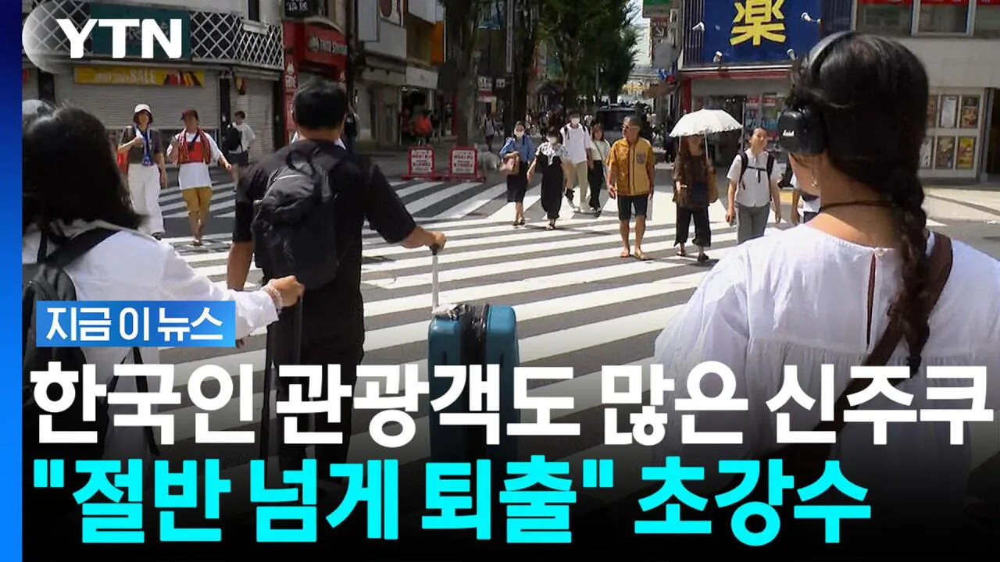
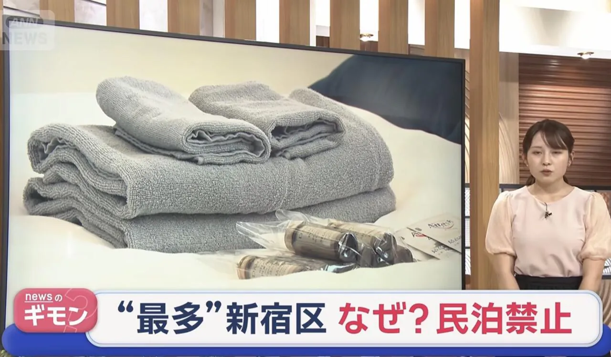
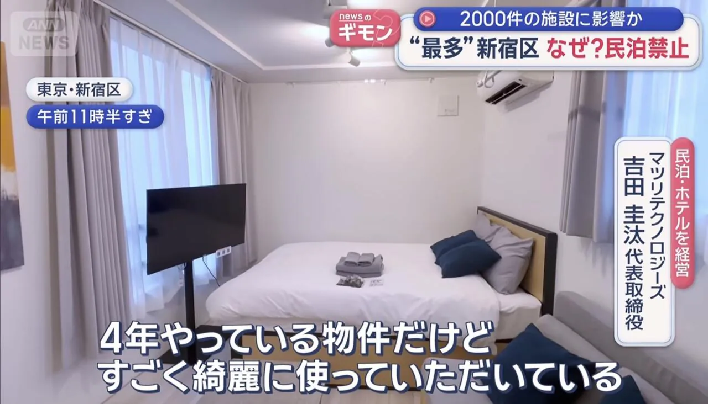
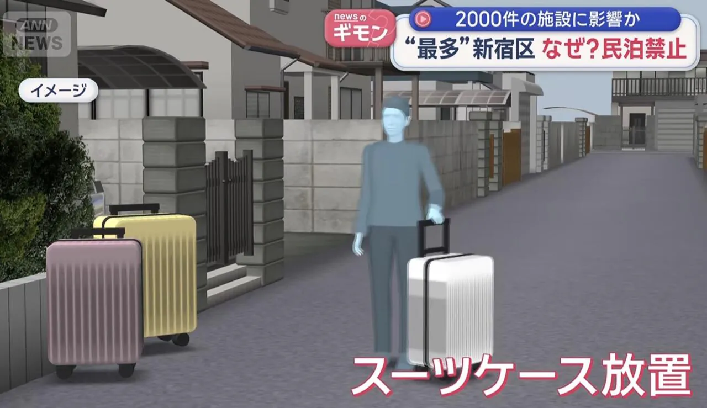
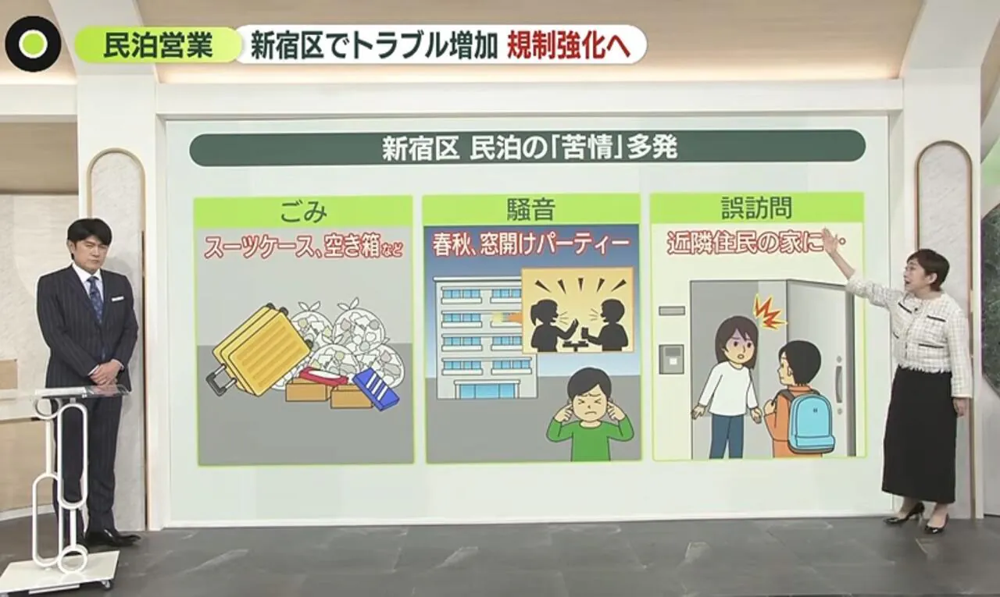
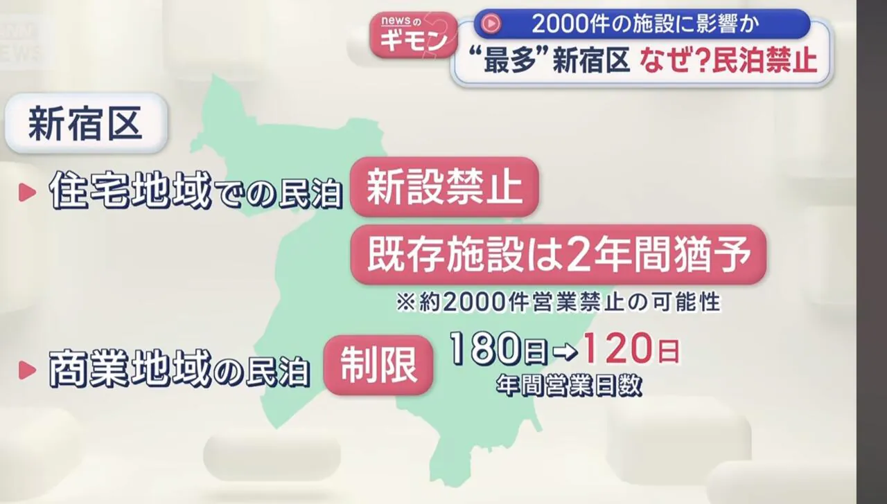
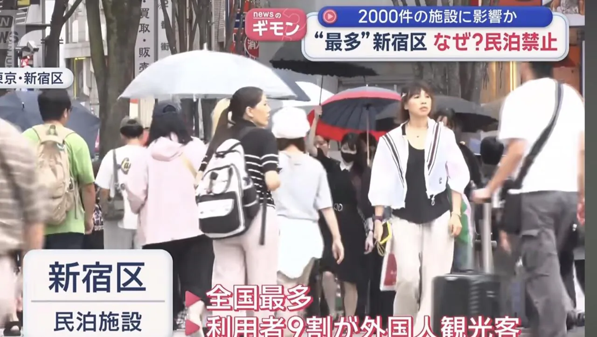

https://www.fmkorea.com/best/10327355565


최근 도쿄 신주쿠구에서
에어비앤비(민박) 퇴출을 선언함

관광객이 넘치다못해
오버투어리즘이 극에 달하자
방을 빌려서 에어비앤비를 하는곳이 많은데
(월세는 100인데 숙박료로 700만원을 범)

관광객들이 공동맨션앞에다
캐리어를 끌고다니면서 소음을 내고
캐리어를 입구에 두고 다니는 경우가 많아졌고

밤마다 파티, 쓰레기 무단투기
옆집 초인종 눌러서 에어비앤비냐고 묻기 등
주민들의 스트레스가 극에 달함

결국 주택지구에서 신규는 완전금지
기존 시설은 2년 유예안에 나가야함
상업시설이라도 연간 120일만 영업할수있게 제한

그 외 아사쿠사 우에노 지역도 도입하면서
앞으로 에어비앤비로 방 구하기 어려워질 예정
도쿄 사는데 신주쿠역 환승할때마다
캐리어 때문에 지나가기도 힘들지경임 ㄹㅇ
10월 초 일본가서 신주쿠 시부야 아사쿠사 우에노중 한곳 잡을라고 아고다 보고있는데 아파트먼트는 다 에어비엔비 같은건가?